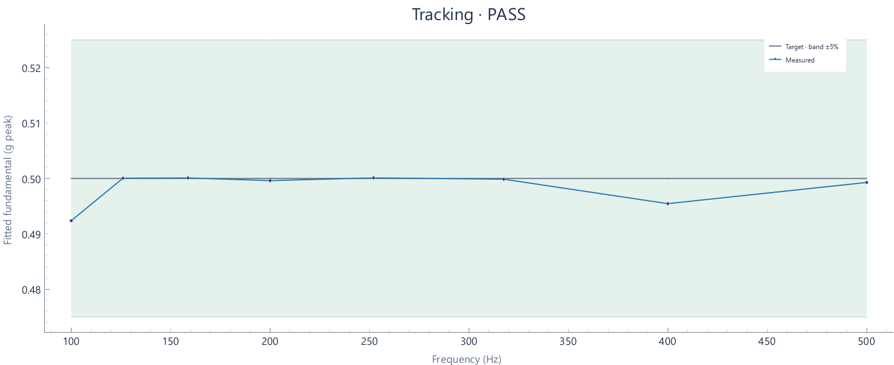

2026-10-29T22:03:03.577122-04:00 · Simulation · Setup 674955c0110f
Run: complete · 129 blocks · 0.49 wall seconds · 12.90 sample seconds
Tracking tolerance: ±5%

| Hz | Target g peak | Settled g peak | Error % | Raw transient peak g | Result |
|---|---|---|---|---|---|
| 100 | 0.5 | 0.49237 | -1.526 | 0.50024 | PASS |
| 125.99 | 0.5 | 0.50004 | +0.008 | 0.50028 | PASS |
| 158.74 | 0.5 | 0.50009 | +0.018 | 0.50029 | PASS |
| 200 | 0.5 | 0.4996 | -0.079 | 0.49971 | PASS |
| 251.98 | 0.5 | 0.5001 | +0.020 | 0.50027 | PASS |
| 317.48 | 0.5 | 0.49986 | -0.027 | 0.50035 | PASS |
| 400 | 0.5 | 0.49545 | -0.910 | 0.49564 | PASS |
| 500 | 0.5 | 0.49927 | -0.145 | 0.49886 | PASS |
Tracking assessment against configured tolerance, separate from run completion. Sine uses the last settling-window blocks at each dwell; transient raw peaks are reported separately. Random excludes startup/ramp and the initial settling interval; all subsequent full-target blocks are evaluated.
Raw peak means the largest absolute acquired sample; it differs from fitted sine amplitude and RMS.
Calibration: Simulation-only feature review; not a hardware calibration.
Input: Synthetic acceleration
Clocks: Synthetic sample clock